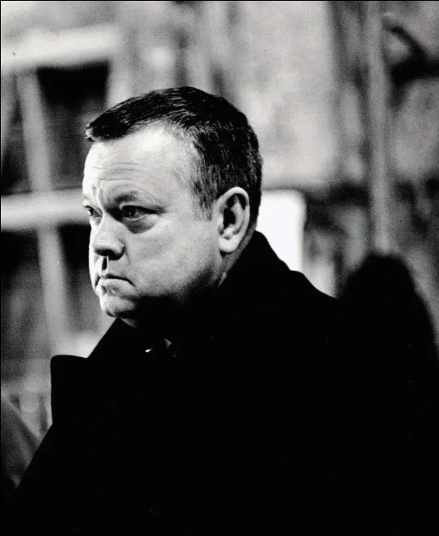
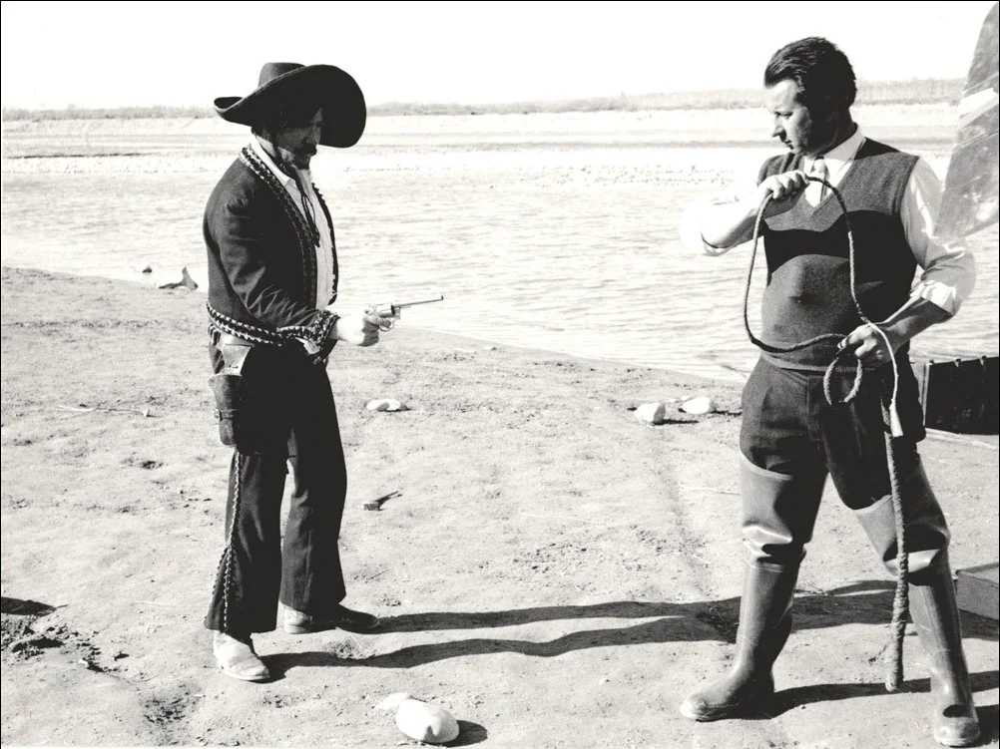
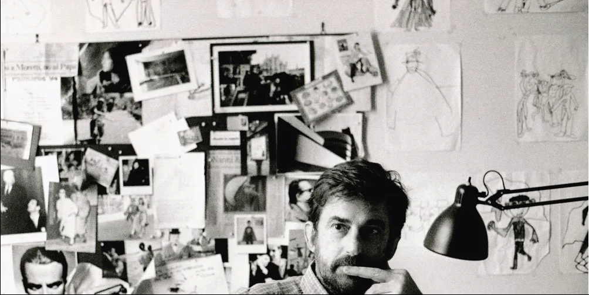
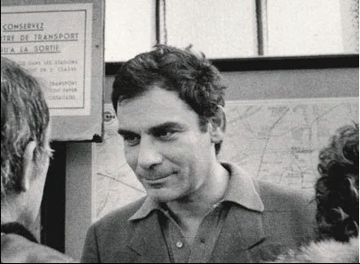

BrandingBranding
UniversoCortoUniversoCorto
I worked with Nomina studio to craft the visual identity for UniversoCorto, an international short film festival. The brief: a presentation that opens the festival every year. I built the cover as a digital collage — tearing, layering, and reassembling Dondero's photographs into a single image.Ho lavorato con lo studio Nomina per costruire l'identità visiva di UniversoCorto, festival internazionale del cortometraggio. Il brief: una presentazione che apre il festival ogni anno. Ho costruito la copertina come un collage digitale — strappando, sovrapponendo e ricomponendo le fotografie di Dondero in un'unica immagine.